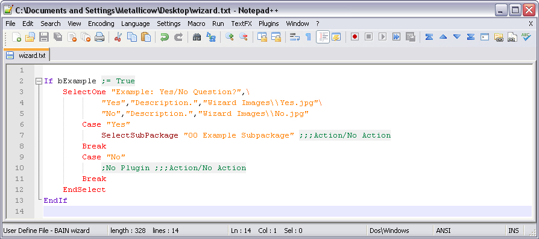

Contents
• Dialogs
• Versions
• Cancel
• Error
• Finish
• Strings
• EditINI
• str
• int
• float
• len
• Keywords
• Note
• If
• Elif
• Else
• EndIf
• While-Continue-Break-EndWhile
• While
• Continue
• Break
• EndWhile
• For
• Continue
• Break
• EndFor
• Case
• Default
• Break
• Return
• Cancel
• Compound Assignment (+=, -=, etc)
• In (in)
• True
• False
• BAIN wizard Script Highlighter for NotePad++
• BAIN Wizard Syntax for EmEditor
Introduction
Starting with Wrye Bash version 278, wizards were added to make it easier to install BAIN packages. Wizards allow modders to include a simple configuration script with their packages. All that needs to be done is create a script file name wizard.txt and include it in the package. When run, the wizard will step through a series of dialogs to determine which sub-packages, esps, and esms should be selected. Afterwards, you can install the package using those selections.
Dialogs
SelectOne
This dialog gives you a list of options, with the option to select one of them. Each option can display an image associated with it, and a description as well. To see a larger version of the image displayed, either right click or middle click on the image. The wizard can specify a default answer, and if you are running it as an Auto-Wizard, then this page will be skipped, using the default option.
{kind=link}
SelectMany
This dialog gives you a list of options, with the option to select one or more of them, or even none of them. Each option can display an image associated with it, and a description as well. To see a larger version of the image displayed, either right click or middle click on the image. The wizard can specify default options, and if you are running it as an Auto-Wizard, then this page will be skipped, using the default options.
{kind=link}
Versions
This dialog will show up if the wizard specified minimum version requirements, and your system doesn't meet those requirements. If you want to run the wizard anyway, you can override the warning by clicking the "Install Anyway." option. If you are running the wizard as an Auto-Wizard, this page will still be shown, but the "Install Anyway." option will already be checked for you.
{kind=link}
Cancel
This dialog will be show if the wizard cancels execution for some reason. If a reason is given, it will be displayed
{kind=link}
Error
This dialog will be shown if the wizard encounters an error in the wizard file. The wizard will then quit.
{kind=link}
Finish
This dialog will be shown at the end of the wizard, to show you which sub-packages, esps, and esms will be selected. It is also a place for any extra notes from the mod auther to be displayed.
{kind=link}
The language
BAIN wizards use a language similar to OBMM script, so modders familiar with OBMM should be able to quickly write BAIN versions of their scripts.
Wizards are case sensitive, so ensure you get the case right. The only exception to this is filenames.
Each line of the wizard contains one statement. If you want to continue the line onto the next one, just add a backslash ( \ ) to the end of the line. This will cause BAIN to read the next line as is it were part of the first.
Variables
You can use variables by assigning a value using an assignment operator. Just make sure you assign a value before using a variable, or it can cause undefined behavior. In the best case, the variable will just be treated as a string with the same value as its name, but this is not guaranteed.
Variable names can contain any alpha-numeric characters (a-z,A-Z,0-9) and underscores ( _ ), but cannot start with a digit. You also cannot create a variable with the same name (case sensitive) as a keyword, function, or constant. Variables can be used to hold any of the following types of data:
• Integers
• 3
• -1
• 0
• Decimals
• 0.123
• -3.5
• 7.0
• Strings
• "Hello"
• 'World!'
Constants
Constants are a sub-type of variables. They follow the same rules, only they cannot be changed. You cannot create constants yourself, but there are a few pre-defined constants in BAIN.
Expressions
BAIN will evaluate expressions following the correct order of operations. For example the expression:
3 + 6 * 2
Will evaluate to 15 as expected, not 18.
Strings
Strings can be denoted by enclosing the text in either single quotes ( ' ), or double quotes ( " ). If you need to include a special character in the string, use an escape sequence. Strings can be added and multiplied using the addition and multiplication operator. You can also test if one string is contained within another using the in operator.
Comments (;)
Comments are extra text ignored by the wizard engine, to explain what is going on in the code to other people who might read the wizard file. To start a comment, use a semi-colon; the comment will include everthing following the semi-colon until the end of the line.
Functions
Functions are called just like in any other language, using the function name followed by arguments inclosed in parenthesis. Arguments can be seperatred either by whitespace or a comma. For example, both of the following would have the same result:
DummyFunction(arg1, "Hello")
DummyFunction(arg1 "Hello")
CompareObVersion
Used to test the installed version of Oblivion against one you specify.
• Usage:
• CompareObVersion(version_string)
• Arguments:
• version_string: a string formatted to hold a file version number, like "1.2.3.93". For example the current Oblivion version would be represented as "1.2.0.416"
• Return:
• -1: Installed Oblivion version is less than the version specified in version_string.
• 0: Installed Oblivion version is the same as the version specified in version_string.
• 1: Installed Oblivion version is higher than the version specified in version_string.
CompareOBSEVersion
Used to test the installed version of OBSE against one you specify.
• Usage:
• CompareOBSEVersion(version_string)
• Arguments:
• version_string: a string formatted to hold a file version number, like "1.2.3.93". For example OBSE v18 would be represented as "0.0.18.6"
• Return:
• -1: Installed OBSE version is less than the version specified in version_string.
• 0: Installed OBSE version is the same as the version specified in version_string.
• 1: Installed OBSE version is higher than the version specified in version_string.
CompareOBGEVersion
Used to test the installed version of OBGE against one you specify. If the new version of OBGE/OGE is installed, this will be used for the comparison. Otherwise, this will be compared to the old version or debugged version if installed.
• Usage:
• CompareOBGEVersion(version_string)
• Arguments:
• version_string: a string formatted to hold a file version number, like "1.2.3.93". For example OBGEv2 version 3 would be represented as "3.0.0.0", while the old OBGE would be "0.1.1.0"
• Return:
• -1: Installed OBGE version is less than the version specified in version_string
• 0: Installed OBGE version is the same as the version specified in version_string
• 1: Installed OBGE version is higher than the version specified in version_string
CompareWBVersion
Used to test the current version of Wrye Bash agains one you specify.
• Usage:
• CompareWBVersion(version_number)
• Arguments:
• version_number: a number representing the Wrye Bash version you want to check. For example Wrye Bash version 284 could be intered as either 284 or "284".
• Return:
• -1: Installed Wrye Bash version is less than the version specified in version_number.
• 0: Installed Wrye Bash version is the same as the version specified in version_number.
• 1: Installed Wrye Bash version is higher than the version specified in version_number.
DataFileExists
Tests for the existance of a file in the Data directory.
• Usage:
• DataFileExists(file_name)
• Arguments:
• file_name: a string or variable holding a string, specifying the path relative to the Data directory to test. For example using "testesp.esp" would test for "...path to oblivion...\Data\testesp.esp"
• Return:
• True: The file exists
• False: The file does not exist
GetEspmStatus
Tests the current status of an esp or espm in the Data directory. This function takes esp/m ghosting into account when testing the status.
• Usage:
• GetEspmStatus(file_name)
• Arguments:
• file_name: a string or variable holding a string, specifying the path relative to the Data directory for the esp or esm to test.
• Return:
• -1: The esp/m does not exist
• 0: The esp/m is not active, imported, or merged ()
• 1: The esp/m is not active, but has portions imported into the Bashed Patch ()
• 2: The esp/m is active ( )
)
• 3: The esp/m is merged into the Bashed Patch ()
EditINI
Tells Wrye Bash to create an ini tweak file with some tweaks in it. If the file that you tell Wrye Bash to apply the tweak to is from the current installer, then Wrye Bash will also automatically apply the tweak, otherwise, it will just be generated for the user to apply manually.
• Usage:
• EditINI(file_name, section, setting, value)
• Arguments:
• file_name: The name of the ini file you wish to edit, relative to the Data directory.
• section: The section in the ini where setting resides, or 'set' or 'setGS' (see examples below)
• setting: The setting you wish to change.
• value: The value to set the setting to.
• Examples:
• Setting an item in Oblivion.ini:
EditINI('Oblivion.ini', 'General', 'bBorderRegionsEnabled', 0)
[General] bBorderRegionsEnabled=0
• Setting an item in a script-like ini: Notice the use of set and setGS as the sections.
EditINI('TargetINI.ini', 'set', 'ANVars.UseEW', 1)
EditINI('TargetINI.ini', 'setGS', 'fPCBaseMagickaMult', 1)
set ANVars.UseEW to 1 setGS fPCBaseMagickaMult 1
str
Used to convert a value into a string, for example when trying to concantenate a integer or decimal to a string.
• Usage:
• str(value)
• Arguments:
• value: any value. An integer, decimal, variable, constant, or another string.
• Return:
• String representation of value. For example, str(5) would return "5".
int
Used to convert a value to an integer, for example converting a value held in a string to a integer value.
• Usage:
• int(value)
• Arguments:
• value: any value. An integer, decimal, variable, constant, or string.
• Return:
• Integer value of value, if possible. For example int('65') would return 65.
• 0 if integer conversion is not possible.
float
Used to convert a value to decimal, for example converting a value held in a string to a decimal value.
• Usage:
• float(value)
• Arguments:
• value: any value. An integer, decimal, variable, constant, or string.
• Return:
• Decimal value of value, if possible. For example, float('2.4') would return 2.4.
• 0.0 if decimal conversion is not possible.
len
Used to find the length of a string.
• Usage:
• len(string)
• Arguments:
• string: a string, variable, or constant.
• Return:
• Length of the string if possible.
• 0 if length calculation was not possible.
Keywords
Keywords are special identifiers that are used for controlling the flow of your wizard, or perform special tasks. To use a keyword, place it on the beginning of a line, followed by any arguments to the keyword.
SelectSubPackage
Cause the specified sub-package to be selected for installation. This is equivilant to checking the sub-package and all the esps or esms in that subpackage in the BAIN window.
• Usage:
• SelectSubPackage name
• Arguments:
• name: string or variable holding the name of the sub-package to select.
DeSelectSubPackage
Cause the specified sub-package to be de-selected from installation. This is equivilant to un-checking the sub-package in the BAIN window.
• Usage:
• DeSelectSubPackage name
• Arguments:
• name: string or variable holding the name of the sub-package to de-select.
SelectEspm
Cause the specified esp or esm to be selected for installation. This is equivilant to checking the esp or esm from the BAIN window.
• Usage:
• SelectEspm name
• Arguments:
• name: string or variable holding the name of the esp or esm to select.
DeSelectEspm
Cause the specified esp or esm to be deselected from installation. This is equivilant to un-checking the esp or esm from the BAIN window.
• Usage:
• DeSelectEspm name
• Arguments:
• name: string or variable holding the name of the esp or esm to de-select.
SelectAll
Cause all sub-packages, esps, and esms to be selected for installation. This is equivilant to first checking all sub-packages in the BAIN window, then checking all esps and esms in the BAIN window.
• Usage:
• SelectAll
DeSelectAll
Cause all sub-packages, esps, and esms to be de-selected from installation. This is equivilant to first un-checking all esps and esms in the BAIN window, then un-checking all sub-packages in the BAIN window.
• Usage:
• DeSelectAll
SelectAllEspms
Cause all esps and esms to be selected for installation. This is equivilant to checking all esps and esms in the BAIN window
• Usage:
• SelectAllEspms
DeSelectAllEspms
Cause all esps and esms to be de-selected from installation. This is equivilant to un-checking all esps and esms in the BAIN window.
• Usage:
• DeSelectAllEspms
RenameEspm
Change the installed name of an esp or esm.
• Usage:
• RenameEspm original_name new_name
• Arguments:
• original_name: the name of the esp or esm, as it appears in the BAIN package.
• new_name: the new name you want to have the esp or esm installed as.
ResetEspmName
Resets the name of an esp or esm back to its default name.
• Usage:
• ResetEspmName original_name
• Arguments:
• original_name: the name of the esp or esm, as it appears in the BAIN package.
ResetAllEspmNames
Resets the names of all the esps and esms back to their default names.
• Usage:
• ResetAllEspmNames
Note
Add a note to the user to be displayed at the end of the wizard, on the finish page. The '- ' will be added automatically.
{kind=link}
• Usage:
• Note note
• Arguments:
• note: string or variable holding a string, to be displayed on the finish page.
If-Elif-Else-EndIf
A basic If control block.
Usage:
If statement
...lines...
Elif statement
...lines...
Elif statement
...lines...
Else
...lines...
EndIf
If
• A begins the control block.
• If statement evaluates to True, then the lines following it will be run, until the next Elif, Else, or EndIf.
Elif
• If statement evaluates to True, and the initial If and none of the previous Elif's were True, then the lines following this Elif will be run, until the next Elif, Else, or EndIf.
Else
• If the initail If and none of the previous Elif's were True, then the lines following will be run until an EndIf is met.
EndIf
• Signals the end of the If control block.
While-Continue-Break-EndWhile
A While loop.
Usage:
While statement
...lines...
...Continue
...lines...
...Break
EndWhile
While
• Begins the while loop.
• If statement evaluates to True, execution of the lines begins, otherwise execution skips to after the EndWhile.
Continue
• Signals the while loop to begin over again at the While statement.
Break
• Signals the while loop to end execution, skipping to after the EndWhile.
EndWhile
• Ends the while loop. statement is re-evaluated, and if True, execution begins again at the start of the While block.
For-Continue-Break-EndFor
A For loop.
Usage:
For varname from start_value to end_value [by increment_value]
...lines...
...Continue
...lines...
...Break
EndFor
For
• Begins the for loop.
• varname is initialized to increment_value, and execution of the For block begins.
• by increment_value is optional. If not specified, the For loop assumes a value of 1 or -1 as appropriate.
Continue
• Signals the for loop to begin another iteration.
• If varname equals end_value, the for loop exits and execution begins after the EndFor.
• Otherwise, varname is incremented by increment_value, and execution begins at the beginning of the For loop again.
Break
• Signals the for loop to end execution, skipping to after the EndFor.
EndFor
• Ends the for loop.
• If varname equals end_value, the for loop is done and execution continues after the EndFor.
• Otherwise, varname is incremented by increment_value, and execution skips back to the beginning of the For loop.
SelectOne
Shows a dialog where the user can select one option from a list of options. After the user presses the "Next" button, this begins a Select control block.
Usage:
SelectOne description, option 1, description 1, image 1, option 2, description 2, image 2, ..., "option n", "description n", "image n"
Case option 1
...lines...
Break
Case option 2
...lines...
Break
...
...
Case option n
...
...
Break
Default
...lines...
Break
EndSelect
• Arguments:
• description: The text that will be displayed at the top of the dialog.
• option n: The text of the specific option. If the text begins with a "|", this is considered the default option and will be selected by default.
• description n: The description to display when option n is selected.
• image n: The image to display when option n is selected. An empty string will make no image display.
Case
• The lines following the Case will be run if the user selected option n on the dialog, until a Break or EndSelect is met.
• Usage:
• Case option n
Default
• The lines following the Default will be run, until a Break or EndSelect, if none of the Case options have been run.
• Usage:
• Default
Break
• Stops running lines in the current Case or Default block.
• Usage:
• Break
EndSelect
• Signals the end of the Select control block.
SelectMany
Shows a dialog where the user can select multiple options from a list. After the user presses the "Next" button, this begins a Select control block. See SelectOne for usage.
Return
Signals completion of the wizard. This will jump right to the finish page.
• Usage:
• Return
Cancel
Cancels the wizard, with an optional text to display in a dialog as to why the wizard was canceled.
• Usage:
• Cancel [text]
RequireVersions
Tests the users system agains version requirements you specify. If the requirements are not met, a warning dialog will be shown asking if you wish to continue anyway.
{kind=link}
• Usage:
• RequireVersions oblivion_version [, obse_version] [, obge_version] [, wrye_bash_version]
• Arguments:
• oblivion_version: Version of Oblivion to for. See CompareObVersion for the proper format of the string.
• obse_version: Optional. Version of OBSE to test for. See CompareOBSEVersion for the proper format of the string.
• obge_version: Optional. Version of OBGE to test for. See CompareOBGEVersion for the proper format of the string.
• wrye_bash_version: Optional. Version of Wrye Bash to test for. See CompareWBVersion for more info.
Operators
Assignment Operators
Assignment operators are how you assign values to variables. The usage can either be to assign one variable a value, or multiple variables the same value:
• variable = value
• variable1 = variable2 = variable3 = value
Assignment (=)
• variable = value
Compound Assignment (+=, -=, etc)
There are compound assignment operators for all of the math operators. A compound assignment will first perform the math operation using the variable and the value, then assign the result to the variable.
• variable += value
• variable -= value
• variable *= value
Math Operators
Addition (+)
Adds two values, variables, etc together
Subtraction (-)
Subtracts two values, variables, etc.
Multiplication (*)
Multiplies two values, variables, etc together.
Division (/)
Divides two values, variables, etc.
Exponentiation (^)
Raised one value to the power of another value
Boolean Operators
Used to test the Truth of values
And (&, and)
• Usage:
• left & right
• left and right
• Return:
• True if both left and right are True.
• False otherwise.
Or (|, or)
• Usage:
• left | right
• left or right
• Return:
• True if either left or right is True.
• False if neither left nor right is True.
Not (!, not)
• Usage:
• !value
• not value
• Return:
• True if value is False.
• False if value is True.
In (in)
• Usage:
• left in right
• Return:
• True if left is contained in right. For example 'hi' in 'this' would return True.
• False otherwise.
Comparison Operators
Used to compare two values, variables, etc together.
Equal (==)
• Usage:
• left == right
• Return:
• True if left is equal to right.
• False otherwise.
Not Equal (!=)
• Usage:
• left != right
• Return:
• True if left does not equal right.
• False otherwise.
Greater Than or Equal (>=)
• Usage:
• left >= right
• Return:
• True if left is greater than or equal to right.
• False otherwise.
Greater Than (>)
• Usage:
• left > right
• Return:
• True if left is greater than right.
• False otherwise.
Less Than or Equal (<=)
• Usage:
• left <= right
• Return:
• True if left is less than or equal to right.
• False otherwise.
Less Than (<)
• Usage:
• left < right
• Return:
• True if left is less than right.
• False otherwise
Built-in Constants
There are only a few constants that come defined in BAIN wizards.
True
• Value: True (1)
False
• Value: False (0)
Escape Sequences
Escape sequences are special sequences of character you can put in a string to get a different character out when used in the wizard
• '\t': Insert a Tab
• '\n': Insert a newline character.
Common Scripting Problems
Have a problem with your wizard script? Here are some common mistakes that cause errors or other strange behavior.
• Make sure the Case is right. Ex1: SelectSubPackage NOT SeLEctsUBPaCkaGe Ex2: Break NOT break
• Mismatched quotes. Ex: 'Plugin.esp" SHOULD BE 'Plugin.esp' or "Plugin.esp"
• Might be missing a , \ at the end of the line or one \ might need removed. This usually throws an error or not all options will be displayed.
• Extra spaces or tabs at the end of a line can cause problems with options showing up. Ex: "","",""\
• Missing called Image File.
Examples for Beginners
BAIN wizard Script Highlighter for NotePad++

• It is recommended that you install utumno's BAIN wizard Script Highlighter for Notepad plus plus if you use Notepad++ to write your install scripts.
• It makes for spotting errors in your script a lot easier.
BAIN Wizard Syntax for EmEditor
• broken85 created a similar Wizard highlighter for EmEditor. It can be found here: BAIN Wizard Syntax for EmEditor
Create a Package Overview Readme
• Every Wizard should have some sort of nice little overview for the user to read before proceeding with the actual installation questions.
• Notice the following example has no Case's(This is intended) and the Default character is before the 'Start Here_Readme'.
SelectOne "Welcome to the ExampleMod's mod Setup Wizard", \ "|Start Here_Readme","If this is the first time you install this mod it's recommended that you carefully read the rest of the selections readme's to have an idea of what the optional parts of this mod do.",""\ "ExampleMod Overview","ExampleText bla bla bla \n\nBla Bla Bla \n\n Bla Bla\n Bla",""\ "Changelog","Example Fixes Release 1.01 \nExample Full Public 1.0 Release \nExample 2nd Beta Release 0.91 \n0.9 - Example Beta Release \n0.3 - Example Alpha Release \n0.01 - Example Initial Release",""\ "Guidelines for a Example install","",""\ "ExampleMod Screenshots","","Screenshots\\ExampleScreenshot.jpg"\ "Credits\Authors","Wrye - For BAIN. Woooooooot! \nLojack - For the wonderful BAIN wizard installer feature. \nMetallicow - For chewing the cud.",""\ "Language","Language or Nationality this BAIN wizard was written in. \n\n English (USA)","Wizard Images\\EnglishUSA.jpg"
EndSelect
Yes/No Question?
• Lets say that you want to ask the user a Yes or No question whether to install a feature of your mod.
• 'SelectOne' in the following example could be replaced by many other Keywords.
• 'SelectSubPackage' in the following example could be replaced by many other Keywords or even another Yes/No Question Block.
SelectOne "Example: Yes/No Question?",\ "Yes","Description.","Wizard Images\\Yes.jpg"\ "No","Description.","Wizard Images\\No.jpg" Case "Yes" SelectSubPackage "00 Example Subpackage" ;;;Action/No Action Break Case "No" ;No Plugin ;;;Action/No Action Break
EndSelect
Check for a Plugin
• Lets say that you want to check the users data folder for a specific plugin, to check if a patch (you might have created) should apply.
If DataFileExists "ExamplePlugin.esp" Note "ExamplePlugin Detected." ;;;Action/No Action SelectEspm "PatchPlugin.esp" ;;;Action/No Action
Else ;ExamplePlugin.esp wasn't detected ;No Plugin ;;;Action/No Action
EndIf
Mods with Wizards
• This is a list of some mods that have wizards included with them if you would like to look at them for reference.
• Animated Window Lighting System and Chimneys - AWLS, Bain Conversion Files, Bananasplit Better Cities, Fast and Easy Frans WIZBAIN Archive Maker -ENGLISH ONLY-, Metallicow Cursor Mod, Unique Landscapes Compilation, Weather - All Natural